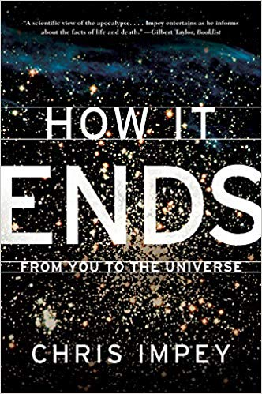

Біографія: Most of us are aware of our own mortality, but few among us know what science, with insights yielded from groundbreaking new research, has to say about endings on a larger scale. Enter astronomer Chris Impey, who chronicles the death of the whole shebang: individual, species, bio- sphere, Earth, Sun, Milky Way, and, finally, the entire universe.